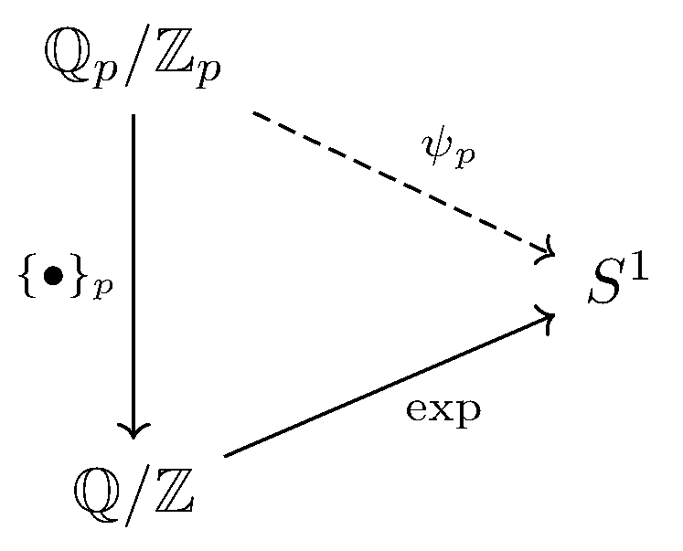

October 5th
Today I learned about some characters of $(\QQ,+),$ as always from Keith Conrad. Namely, these are group homomorphisms $\QQ\to S^1,$ where $S^1$ is the unit circle in $\CC.$ For brevity, we write $\widehat\QQ=\op{Hom}(\QQ,S^1).$ We can generate "a lot'' of characters by considering various embeddings of $\QQ$ into its local fields. So, for example, we have that, for any $s\in\RR,$\[q\mapsto e^{(2\pi is)q}\]is a fine character by exponent rules. The correct way to look at these homomorphisms is as the restriction of our homomorphisms $\RR\to S^1$ to $\QQ.$ We include the $2\pi$ factor so that we can remark this is "really'' a homomorphism from $\QQ/\ZZ\to S^1$ which has been extended to all of $\QQ.$ In the same way, we can say the correct way to look at this is as a restriction of the obvious homomorphism $\RR/\ZZ\to S^1.$
We can extend this idea to local files other than $\RR.$ Namely, fix $p$ a finite prime, and we'll look at $\QQ_p.$ And as motivated by $\RR,$ we'll really try to look at $\QQ_p/\ZZ,$ but this is a bit unnatural, so we actually want to look at $\QQ_p/\ZZ_p.$ Explicitly, we have a surjection $\QQ_p\to\QQ_p/\ZZ_p$ which "extracts'' the negative-power terms:\[\sum_{n=-N}^\infty a_np^n\in\QQ_p\longmapsto\sum_{n=-N}^{-1}a_np^n\in\QQ_p/\ZZ_p.\]As in $\RR,$ we will denote this $p$-adic fractional part by $\{\bullet\}_p.$ The nice thing about $\{\bullet\}_p,$ though, is that we have a natural embedding $\QQ_p/\ZZ_p\to\QQ$ because these elements are finite sums of rationals. So we're allowed to claim that, for some $s\in\QQ_p,$\[q\mapsto e^{2\pi\{sq\}_p}\]is a homomorphism $\QQ\to S^1.$ We'll show here that $q\mapsto e^{2\pi\{q\}_p}$ is a homomorphism; afterwards, we'd just need to replace $q$ with $sq$ to finish.
Essentially, to make this homomorphism work, we need to know that $\{x+y\}_p=\{x\}_p+\{y\}_p$ in $\QQ/\ZZ$ in the same way that $\{x+y\}=\{x\}+\{y\}$ in $\RR/\ZZ.$ But note\[\{x+y\}_p-\{x\}_p-\{y\}_p=-(x+y-\{x+y\}_p)+(x-\{x\}_p)+(y-\{y\}_p)\in\ZZ_p,\]so the equality surely holds in $\QQ_p/\ZZ_p.$ However, $\{x+y\}_p-\{x\}_p-\{y\}_p$ is then a $p$-adic integer created as a finite sum of elements of $\QQ_p$ with finite base-$p$ expansion; it follows we have a $p$-adic integer with finite base-$p$ expansion, so $\{x+y\}_p-\{x\}_p-\{y\}_p\in\ZZ$ after all.
As an aside, it's fun to note that this homomorphism, say $\psi_p,$ is essentially the one that fits this commutative diagram.
However, writing $\QQ/\ZZ=\bigoplus_p\QQ_p/\ZZ_p$ (with the natural $\{\bullet\}_p$ inclusions), tells us that there is a unique homomorphism $\QQ/\ZZ\to S^1$ which commutes with any of our choices $\psi_p$ (including the multiplicative scaling). I think the categorical perspective is a bit satisfying.